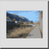

Πρόκειται για αυτόματη μετάφραση.
Γραμμή εργαλείων / Εικονίδιο:

Εισάγει μια εικόνα ράστερ (bitmap) στο σχέδιο. Σημειώστε ότι το αρχείο σχεδίου που δημιουργείται κατά την αποθήκευση του σχεδίου περιέχει μόνο αναφορές στις εισαγόμενες εικόνες. Συνιστάται να διατηρείτε το αρχείο εικόνας και το αρχείο σχεδίου στον ίδιο φάκελο, ώστε το QCAD να μπορεί να βρει την εικόνα ξανά όταν το αρχείο σχεδίου φορτωθεί αργότερα. Τα διαφανή φόντα υποστηρίζονται για εικόνες PNG. Σημειώστε ότι οι μεγάλες εικόνες bitmap μπορούν να κάνουν την εμφάνιση του σχεδίου πολύ αργή. Συνήθως θα θέλετε οι εικόνες να βρίσκονται στο φόντο των άλλων οντοτήτων. Ανατρέξτε στο εργαλείο 'Τροποποίηση' - 'Αποστολή προς τα πίσω' για να μάθετε πώς να το κάνετε αυτό.